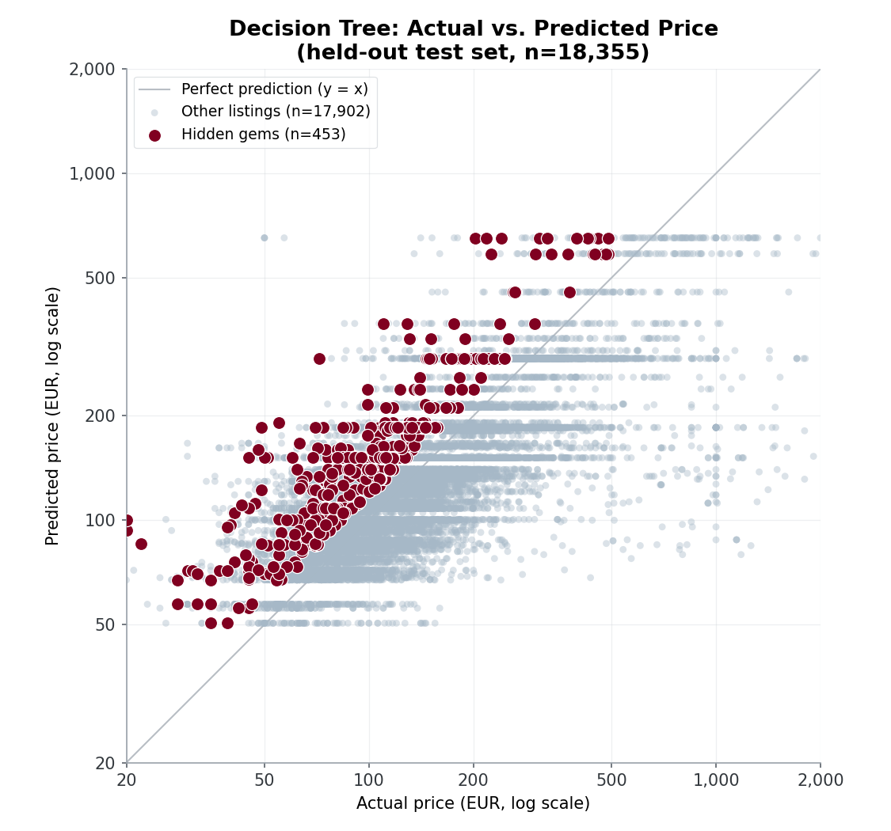
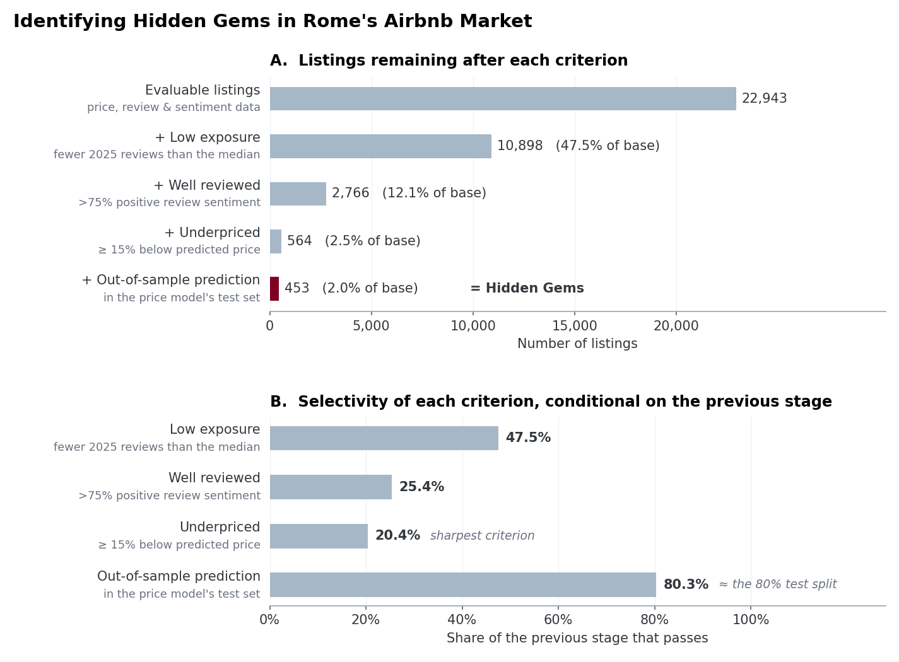
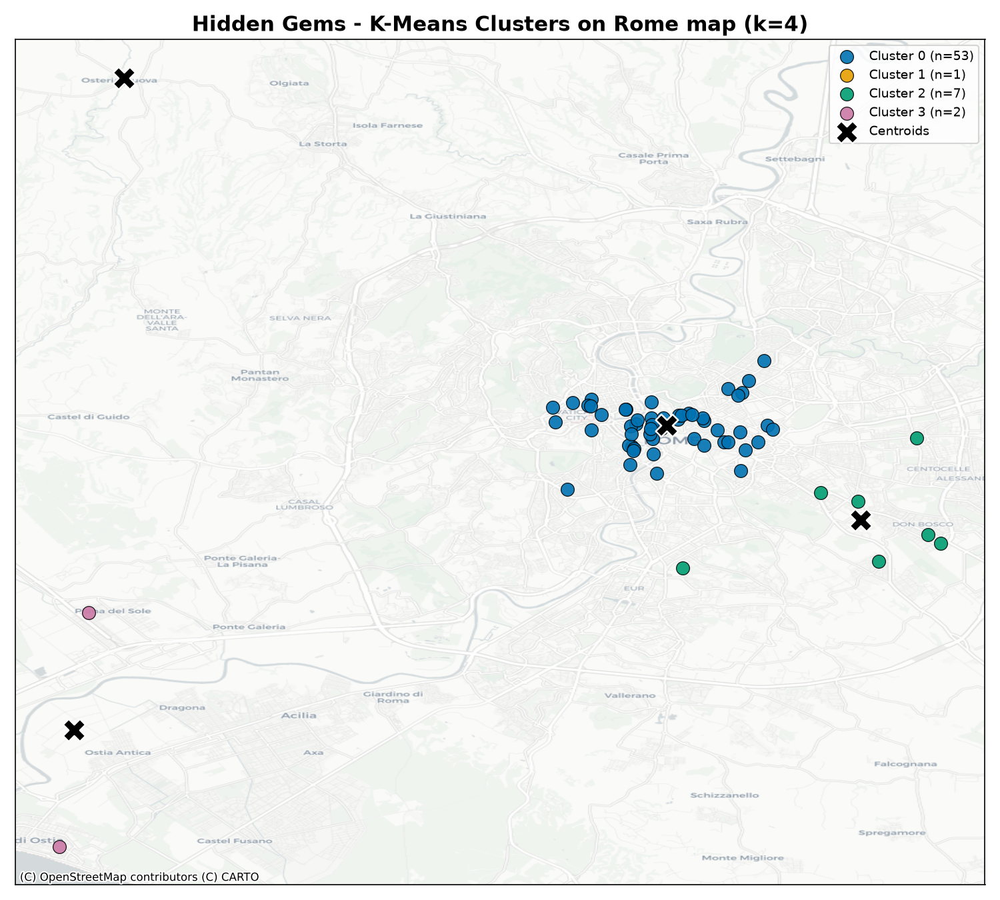
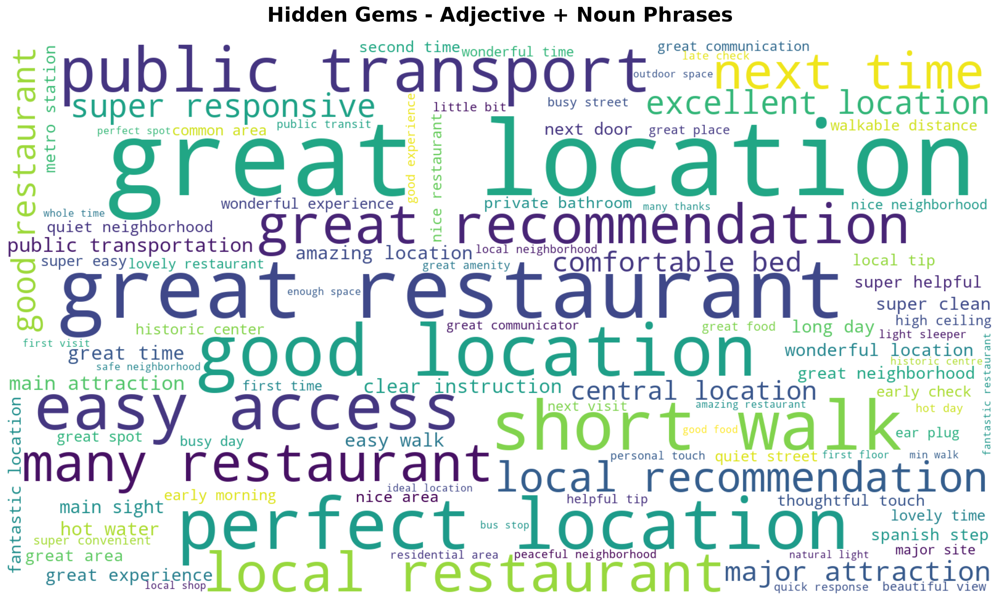
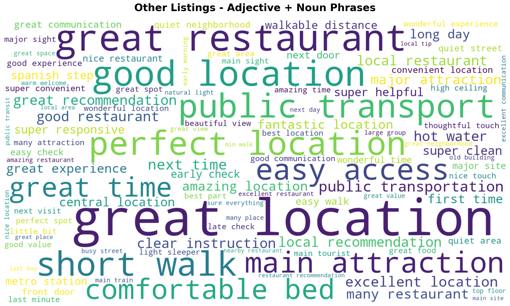

דומיין
לפלטפורמות השכרה קצרת-טווח כמו Airbnb יש בעיית חשיפה: קומץ קטן של נכסים מוכרים ומדורגים היטב מככב בכל חיפוש, בזמן שנכסים מצוינים ובמחיר הוגן פשוט "נעלמים" מהעין. בפרויקט זה בחנו את שוק ה-Airbnb ברומא, איטליה, ושאלנו האם ניתן לזהות באופן אוטומטי, מתוך נתוני נכסים וביקורות ציבוריים, נכסים מוערכים אך לא-מוכרים כאלה — "Hidden Gems" — מה מייחד אותם משאר השוק, והאם הם מתחלקים לתתי-סוגים ברורים.
נתונים
שני קבצי מקור גולמיים (רומא, בסגנון ייצוא Inside Airbnb):
| קובץ | מספר שורות | גודל | תיאור |
|---|---|---|---|
data/listings.csv |
37,583 | 7.0MB | שורה לכל נכס: מיקום, מחיר, סוג חדר, פרטי מארח, כמות ביקורות, זמינות |
data/reviews.csv |
2,477,671 | 801MB | שורה לכל ביקורת: מזהה נכס, תאריך, שם המבקר/ת, טקסט חופשי |
ניקוי ובעיות שאותרו:
- נכסים (clean_listings.py ← listings_cleaned_2025.csv, 24,026 שורות): הסרת כפילויות לפי id; המרת price ממחרוזת (עם סימני מטבע) למספר נקי price_clean (ו-log_price); הושארו רק נכסים עם מחיר חיובי תקין ועם לפחות ביקורת אחת מ-2025.
- ביקורות (clean_reviews.py ← reviews_cleaned_2025.csv, 621,081 שורות): סינון לביקורות מ-2025 בלבד, נרמול טקסט (הסרת HTML/קישורים/רווחים מיותרים), וסינון לביקורות ש"נראות אנגלית" בעזרת היוריסטיקה פשוטה (יחס אותיות לטיניות + בדיקת מילים נפוצות).
- הטיה שגילינו במהלך הפרויקט: ההיוריסטיקה לזיהוי אנגלית הייתה מקלה מדי — בדיקת שפה אמיתית (langdetect) שהרצנו בהמשך גילתה שכ-42% מהביקורות "האנגליות" היו בפועל בשפות אחרות (צרפתית, ספרדית, איטלקית ועוד). את הבעיה תיקנו במסגרת ניתוח ענני המילים (בעיה 4), אך קובץ הבסיס reviews_cleaned_2025.csv עצמו עדיין מכיל את הרעש הזה — כל רכיב שמשתמש בטקסט הביקורות הגולמי צריך סינון שפה משלו (כפי שהוספנו ב-build_wordclouds.py).
- בעיית איכות נתונים נוספת: מספר קטן של שורות בשני קובצי ה-CSV הנקיים פגומות (מקור הבעיה: כמה ביקורות מקוריות הכילו תו מירכאות לא-תקין שבלבל את כותב ה-CSV). התמודדנו עם זה בכל מקום שבו קראנו את הקבצים האלה (parsing סלחני + ולידציה ש-listing_id הוא אכן מספרי לפני שימוש) — משפיע על כ-0.01% מהשורות לכל היותר.
- שדות חסרים: accommodates, amenities_count, bedrooms ו-bathrooms — שקיימים בדרך כלל בייצוא מלא של Inside Airbnb — אינם קיימים בדאטהסט הזה בכלל. זה הגביל את שלב ה-clustering (בעיה 3); הרחבה בסעיף הקשיים שם.
בעיה 1 — חיזוי "מחיר הוגן" לנכס
השערה: מחירו של נכס מוסבר במידה רבה ע"י מאפיינים נצפים ומבניים (מיקום, נפח/עדכניות ביקורות, התנהגות המארח, זמינות). אם כך, הפער בין המחיר בפועל למחיר החזוי ע"י המודל הוא סימן משמעותי לכך שהנכס מתומחר ביתר או בחסר ביחס לנכסים דומים — וזהו הבסיס לזיהוי ה-Hidden Gems בבעיה 2.
הפתרון: בקובץ train_decision_tree.py אימנו DecisionTreeRegressor של sklearn (פרמטרים ברירת מחדל, ללא הגבלת עומק — נבחר כי עצי החלטה הם שיטת הלמידה המונחית שנלמדה בקורס ורצינו ליישם אותה) לחיזוי log_price מתוך: minimum_nights, number_of_reviews, reviews_per_month, calculated_host_listings_count, availability_365, review_scores_rating, בתוספת room_type ו-neighbourhood בקידוד one-hot. (גם accommodates נדרש כ-feature אך אינו קיים בנתונים ומולא בקבוע 0, ולכן לא תרם שום מידע בפועל — מצוין כאן לשקיפות.) השתמשנו בפיצול train/test של 80/20 (random_state=42); לאחר מכן המודל חוזה מחדש על כל הדאטהסט, וההפרש price_clean − predicted_price נשמר כעמודת residual בקובץ listings_model_predictions.csv (24,026 שורות) לשימוש בהמשך הפרויקט.
קריטריון הערכה: RMSE ו-MAPE בין המחיר בפועל למחיר החזוי, מחושבים רק על ה-test set (20%, n=4,806) — זו הערכת ההכללה ההוגנת. לשם השוואה חישבנו גם את המדד הנאיבי על כל הדאטה (compute_metrics.py), כדי להמחיש מלכודת מתודולוגית (ראו למטה).
Setup: אותו פיצול 80/20 כמו באימון; המדדים חושבו הן ביחידות מחיר מקוריות (דרך exp(log_price)) והן ביחידות log.
תוצאות:
| מדד | test set (הוגן) | כל הדאטה כולל שורות אימון (מטעה) |
|---|---|---|
| RMSE (log price) | 0.639 (טעות מכפילה של כ-פי 1.9) | 0.286 (כ-פי 1.33) |
| RMSE (מחיר, יורו) | — | 154.39 |
| MAE (מחיר, יורו) | — | 23.87 |
| MAPE | — | 11.79% |
| חציון APE | — | 0.00% |
ויזואליזציה: docs/assets/price_model_actual_vs_predicted.png — מחיר בפועל מול מחיר חזוי (סקאלת log-log) על ה-test set, כאשר 63 ה-Hidden Gems הסופיים מודגשים.

קשיים וממצא מתודולוגי מרכזי: עץ ההחלטה ללא הגבלת עומק overfit באופן משמעותי. הערכה על כל הדאטה (שכוללת את 80% השורות שהמודל כבר ראה באימון) נותנת חציון APE של 0% בדיוק — כלומר העץ פשוט שינן את שורות האימון — מה שמסתיר את הטעות האמיתית, שעל ה-test set הרבה יותר גבוהה (RMSE שמתורגם לטעות מכפילה של כ-פי 1.9). זו דוגמה מאלפת בדיוק למלכודת שעליה מזהירות הנחיות הקורס: תמיד להעריך על נתונים שהמודל לא ראה. לממצא הזה יש גם השלכה חיובית ישירה על בעיה 2: מכיוון שנכס ששונן באימון מקבל residual ≈ 0, כמעט בלתי אפשרי עבורו לעמוד בקריטריון "זול ב-15% מהחזוי" — וכתוצאה מכך, כל 63 ה-Hidden Gems שמצאנו בבעיה 2 נמצאים דווקא ב-test set, כלומר המחיר החזוי שלהם הוא הערכה אמיתית ולא-ממוחזרת. אנחנו מציינים את זה גם כמגבלה של המודל וגם כהרגעה מתודולוגית לגבי בעיה 2.
בעיה 2 — זיהוי נכסי "Hidden Gem"
השערה: נכס "חבוי" הוא נכס ש-(א) פחות נחשף/מבוקר ביחס לשוק, (ב) אהוב באמת על ידי מי שכן התארח בו, ו-(ג) מתומחר משמעותית מתחת למה שהיינו מצפים לפי מאפייניו. שילוב של שלושת הסימנים הבלתי-תלויים האלה אמור לחשוף קבוצה קטנה ואמינה של מציאות אמיתיות, במקום להסתמך על סימן רועש בודד.
הפתרון — פייפליין בן ארבעה שלבים:
1. ציון סנטימנט (compute_sentiment.py ← reviews_cleaned_2025_sentiment.csv, 621,076 ביקורות): ציון compound של VADER (בין 1- ל-1) לכל ביקורת.
2. אחוז חיוביות לכל נכס (compute_positive_rate.py ← listing_positive_rate.csv, 24,936 נכסים): ביקורת נחשבת "חיובית" אם ה-compound שלה ≥ 0.5; positive_rate = אחוז הביקורות החיוביות מתוך סך הביקורות של הנכס.
3. דגל "לא-פופולרי" (compute_hidden_flag.py ← listing_hidden_flag.csv): השוואת כמות ביקורות 2025 של הנכס אל מול החציון של כלל הנכסים (18 ביקורות); is_hidden = 1 אם הכמות נמוכה מהחציון.
4. שילוב הקריטריונים (find_hidden_gems.py ← hidden_gems.csv): נכס נחשב Hidden Gem רק אם כל השלושה מתקיימים יחד: is_hidden == 1, positive_rate > 0.75, וגם price_clean ≤ predicted_price × 0.85 (כלומר זול ב-15% לפחות מהמחיר שחזה המודל מבעיה 1).
קריטריון הערכה: מכיוון שאין תיוג "אמת" (ground truth) למושג "Hidden Gem", ההערכה מבוססת על (א) כוח ההבחנה של כל שלב סינון (כמה כל קריטריון מצמצם את הקבוצה, כלומר שהשילוב לא ריק ולא טריוויאלי) ו-(ב) תקפות-פנים איכותנית — קריאה של הפער במחיר ורמת הסנטימנט של הנכסים שהתקבלו כדי לוודא שהם אכן נראים כמו מציאות אמיתיות (מורחב עוד יותר איכותנית בענני המילים של בעיה 4, בהתאם להנחיית הקורס שבדיקה איכותנית/סמנטית היא שיטת הערכה לגיטימית כשאין ground truth).
Setup: שלושת קבצי המקור אוחדו (inner join) לפי listing_id, כך שאוכלוסיית ההערכה מוגבלת ל-7,884 הנכסים שמופיעים בשלושתם (נכסים עם מחיר, ביקורות, וגם תחזית מחיר).
תוצאות: מתוך 7,884 נכסים שנבדקו: 4,086 (51.8%) מתחת לחציון כמות הביקורות; מתוכם 1,150 (14.6%) גם עם positive_rate מעל 75%; ומתוכם 63 (0.8%) גם עוברים את רף ההנחה של 15% — רשימת ה-Hidden Gems הסופית.
ויזואליזציה: docs/assets/hidden_gem_funnel.png (משפך שלושת שלבי הסינון), וכן הנקודות המודגשות בגרף הפיזור של בעיה 1 (כל 63 הנכסים נמצאים משמעותית מעל קו ה-y=x, כלומר המחיר החזוי גבוה בבירור מהמחיר בפועל).

קשיים: אין ground truth לבדוק מולו precision/recall של ההגדרה — הספים (חציון ביקורות, 0.75 חיוביות, הנחה של 15%) הם בחירות מנומקות ולא ספים שכוילו מול סט מתויג. הקריטריון המבוסס-מחיר יורש את שגיאת המודל מבעיה 1, אם כי הממצא על ה-overfitting שם דווקא מרגיע במקרה הספציפי הזה.
בעיה 3 — Clustering: חלוקת ה-Hidden Gems לסוגים
השערה: ה-Hidden Gems אינם קבוצה אחידה — סביר שהם מתחלקים לתתי-סוגים נבדלים (למשל לפי מיקום, או לפי סוג הנכס) שיהיה שימושי לאפיין בנפרד (כמו פיצ'ר "סוגי Hidden Gems" באתר הזמנות).
הפתרון: הרצנו K-means (clustering/build_clusters.py) על 63 נכסי ה-Hidden Gems. הערה חשובה: משתני ה-clustering שהתבקשו במקור היו latitude, longitude, accommodates, amenities_count; שני האחרונים אינם קיימים בכלל בדאטהסט (ראו סעיף הנתונים), ולכן ה-clustering בוצע רק לפי latitude/longitude — כך שהתוצאה היא חלוקה גיאוגרפית ולא חלוקה לפי סוג הנכס. לא נמצאו ערכים חסרים בשני השדות האלה (63/63 שלמים); בוצעה סטנדרטיזציה (StandardScaler) לפני ההרצה, כי K-means רגיש לסקאלה.
קריטריון הערכה: ציון Silhouette, בשילוב עם פרשנות — האם גדלי ה-clusters מאוזנים והאם הם מייצגים תתי-אזורים משמעותיים ונבדלים, ולא רק בידוד של חריג אחד-שניים.
Setup: K-means הורץ בנפרד עבור k=3 ו-k=4 (random_state=42, n_init=10), והושוו לפי ציון Silhouette וגם לפי המבנה האיכותני של הקבוצות שהתקבלו (הצלבה מול עמודת neighbourhood של כל נכס).
תוצאות: k=3 משיג ציון Silhouette גבוה יותר (0.81 מול 0.63), אך אינו שימושי: הוא בסך הכל מבודד 3 נכסים רחוקים לתוך שני clusters זעירים (יחיד/זוג), ומשאיר 60 מתוך 63 הנכסים (95%!) ב-cluster אחד לא-מובחן. לכן נבחר k=4: הוא מפצל מתוך אותו cluster ענק תת-קבוצה גיאוגרפית אמיתית ובעלת אופי שונה — 7 נכסים באזור סן ג'ובאני/צ'ינצ'יטה ואפיה אנטיקה (דרום-מזרח רומא) — חלוקה שימושית משמעותית יותר על אף ציון ה-Silhouette הנמוך יותר, מה שממחיש ש-Silhouette לבדו יכול להטעות על דאטהסט קטן ובעל התפלגות גיאוגרפית לא-אחידה.
| Cluster | שם | n | מחיר ממוצע | הנחה ממוצעת | חיוביות ממוצעת | ביקורות ממוצע | סוג נכס דומיננטי |
|---|---|---|---|---|---|---|---|
| 0 | פנינות המרכז ההיסטורי המבוססות | 53 | €195.8 | 42.1% | 93.9% | 101.6 | 69.8% דירה שלמה |
| 2 | חדרים פרטיים במחיר מציאה, דרום-מזרח רומא | 7 | €77.3 | 49.4% | 95.6% | 74.3 | 71.4% חדר פרטי |
| 3 | פנינות פרבריות/חוף שקטות (אוסטיה/פורטואנזה) | 2 | €115.5 | 20.1% | 100% | 11.5 | 100% דירה שלמה |
| 1 | חריג צפוני בודד (קאסיה/פלמיניה) | 1 | €88.0 | 45.0% | 100% | 57.0 | 100% דירה שלמה |
ויזואליזציה: clustering/map_k4.png (פיזור גיאוגרפי על גבי מפת רומא בפועל, צביעה לפי cluster, מרכזים מסומנים).

קשיים: המגבלה המרכזית היא היעדר accommodates/amenities_count — ה-clustering עונה על איפה נמצאים סוגים שונים של Hidden Gems, לא על איזה סוג נכס הם. עם 63 נקודות בלבד והתפלגות גיאוגרפית לא-אחידה (רוב הנכסים במרכז, מעטים בפריפריה), לשניים מתוך ארבעת ה-clusters יש n≤2, מדגם קטן מדי כדי להסיק ממנו במלוא הביטחון — רק clusters 0 ו-2 מובהקים סטטיסטית.
בעיה 4 — איזו שפה מייחדת Hidden Gems? (ענני מילים)
השערה: המילים שאורחים משתמשים בהן כדי לתאר Hidden Gems שונות באופן שיטתי מהמילים המשמשות לתיאור שאר הנכסים, וחושפות מה בדיוק עושה נכס ל"פנינה נסתרת", מעבר לקריטריונים המספריים ששימשו להגדרתו (בדיקה איכותנית-סמנטית, ברוח שיטת ההערכה-ללא-ground-truth שנלמדה בהקשר של זיהוי קהילות).
הפתרון — פייפליין טקסט-מיינינג (build_wordclouds.py), הופעל בנפרד על ביקורות 63 ה-Hidden Gems מול כל שאר הביקורות:
1. סינון שפה (התווסף באמצע הפרויקט): ההיוריסטיקה לזיהוי אנגלית בניקוי הבסיסי החמיצה כ-42% טקסט לא-אנגלי (ראו סעיף הנתונים) — הוספנו זיהוי שפה אמיתי לכל ביקורת (langdetect, הורץ במקביל על כל ליבות המעבד) והשארנו רק ביקורות שזוהו כאנגלית (300/356 ביקורות Hidden Gems; 339,336/620,669 שאר הביקורות).
2. Tokenization: פירוק מהיר מבוסס regex, תוך שמירת סימני פיסוק כטוקנים נפרדים כדי שישברו באופן טבעי סמיכות בין משפטים.
3. POS-Tagging: מתייג חלקי-הדיבר של nltk (Averaged Perceptron), הורץ לפני הסרת מילות עצירה (דיוק התיוג תלוי בהקשר תחבירי, שמילות העצירה מספקות).
4. חילוץ צירופים: נשמרים רק זוגות סמוכים בתבנית [תואר][שם עצם] (למשל "great location", "quiet neighborhood"), כנדרש במשימה.
5. הסרת מילות עצירה ורעש דומייני: מילות עצירה סטנדרטיות באנגלית בתוספת רשימה דומיינית (rome, apartment, host, stay, airbnb, room וצורות קרובות) — מוחל אחרי התיוג.
6. Lemmatization: WordNetLemmatizer (נבחר במקום Stemming כדי להימנע מגזעי מילים קטועים ובלתי-קריאים).
קריטריון הערכה: איכותני-סמנטי — האם שני ענני המילים חושפים נושאים ברורים ונבדלים שמסבירים באופן סביר את ההבדלים הכמותיים שכבר מצאנו (בהתאם להנחיית הקורס שענני מילים הם דרך לגיטימית להעריך חלוקה כשאין ground truth).
Setup: תדירויות הצירופים נספרו בנפרד לכל קבוצה; שני ענני המילים עוצבו בהגדרות זהות (גודל, colormap, seed לפריסה) כך שרק התוכן משתנה.
תוצאות: צירופי "location" דומיננטיים בשני העננים (הגורם האוניברסלי לשביעות רצון), ואף בולטים יחסית יותר אצל ה-Hidden Gems (7.0% מהביקורות מזכירות צירוף location, מול 5.1% אצל השאר). מעבר לכך, שתי הקבוצות נבדלות: ביקורות על Hidden Gems מדגישות שפה אישית ויחסי-מארח ("thoughtful touch", "good communication", "detailed instruction", פרטים פיזיים ספציפיים כמו "washing machine", "ear plug"), בעוד ביקורות על שאר הנכסים מדגישות שפה של תשתית/לוגיסטיקה ושירות מלוטש ("super convenient/helpful/responsive", "easy access", "public transportation", "metro station", "quiet street/area/neighborhood").
ויזואליזציה: data/wordcloud_hidden_gems.png ו-data/wordcloud_other_listings.png.


קשיים: מדגם ה-Hidden Gems קטן (300 ביקורות אנגליות מ-63 נכסים, מול 339,336 בקבוצת ההשוואה), כך שצירופים נדירים בענן הזה רועשים סטטיסטית; אפשר לסמוך רק על הצירופים שחוזרים בעקביות ובתדירות גבוהה יותר. מתודולוגיה מלאה והרחבה על המגבלות מתועדות בנפרד בקובץ wordcloud_analysis.md.
עבודה עתידית
- להשיג ייצוא מלא יותר של נכסים (הכולל
accommodates,amenities_count,bedrooms,bathrooms) ולהריץ מחדש את ה-clustering של בעיה 3 לפי מאפייני הנכס בפועל, ולא רק גיאוגרפיה — כדי לענות במלואה על שאלת "סוגי ה-Hidden Gems" המקורית. - להגביל את עץ ההחלטה מבעיה 1 (
max_depth,min_samples_leaf) או לנסות מודל אנסמבל (Random Forest / Gradient Boosting) כדי לצמצם overfitting ולקבל סימן פער-מחיר מהימן יותר. - להעביר את סינון השפה שהוספנו לצעד המקדים עצמו (
clean_reviews.py), כך שכל הקבצים בהמשך ייהנו מסינון אנגלית מדויק, לא רק שלב ענני המילים. - לוודא את הגדרת ה-Hidden Gem מול איתות חיצוני אם יימצא (למשל בדיקה ידנית של מדגם מ-63 הנכסים, או השוואה מול סטטוס Superhost / קצב תגובה אם שדות כאלה יהיו זמינים).
- להרחיב את ניתוח ענני המילים לכל cluster בנפרד (שילוב בעיה 3 עם בעיה 4), ולבדוק האם הפיצול "מיקום מול יחס אישי" נשמר גם בתוך כל אזור גיאוגרפי.
מסקנה
התחלנו מנתוני נכסים וטקסט ביקורות גולמיים, ובנינו פייפליין מקצה-לקצה ש-(1) לומד קו בסיס לחיזוי מחיר, (2) משלב נפח ביקורות, סנטימנט, ופער מחיר-מול-חיזוי להגדרה עקבית של "Hidden Gem", (3) מראה שה-63 הנכסים שהתקבלו מתחלקים לתתי-סוגים גיאוגרפיים נבדלים, ו-(4) משתמש בכריית טקסט כדי להראות למה בעצם מעריכים אותם — חוויה אישית ומארחת יותר — לעומת הפנייה המבוססת-מיקום-ולוגיסטיקה של הנכסים הפופולריים. במהלך הדרך גילינו ותיקנו שתי בעיות איכות נתונים אמיתיות (תו מירכאות ששיבש קובצי CSV, וסינון שפה אנגלית מקל מדי) וכן מלכודת overfitting חשובה במודל המחיר — שני הממצאים האלה שינו באופן מהותי, ובסופו של דבר חיזקו את מהימנות התוצאות הסופיות.